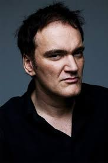

Our Famous Directors
Here are our most famous directors.
Zack Snyder
Zachary Edward Snyder (born March 1, 1966) is an American film director, producer, and screenwriter. He made his feature film debut in 2004 with Dawn of the Dead, a remake of the 1978 horror film of the same name. Since then, he has directed or produced a number of comic book and superhero films, including 300 (2006) and Watchmen (2009), as well as the Superman film that started the DC Extended Universe, Man of Steel (2013), and its follow-ups, Batman v Superman: Dawn of Justice (2016) and Justice League (2017). A director's cut for Justice League was released in 2021. He also directed the computer-animated film Legend of the Guardians: The Owls of Ga'Hoole (2010), the psychological action film Sucker Punch (2011), and the zombie heist film Army of the Dead (2021). In 2004, he founded the production company The Stone Quarry (formerly known as Cruel and Unusual Films) alongside his wife Deborah Snyder and producing partner Wesley Coller. Snyder was born in Green Bay, Wisconsin, and raised in Riverside, Connecticut. His mother, Marsha Manley (née Reeves; d. 2010), was a painter and a photography teacher at Daycroft School, which Snyder later attended. His father, Charles Edward "Ed" Snyder, worked as an executive recruiter. He has an older sister, Audrey, and was raised as a Christian Scientist. He also had a brother, Sam, who died when Snyder was a teenager. Snyder attended Camp Owatonna in Harrison, Maine, during the summer months as a child. Snyder studied painting a year after high school at Heatherley School of Fine Art in England, although he had already begun filmmaking. Afterward, Snyder attended Art Center College of Design in Pasadena, California. He graduated with a BFA in film in 1989 The production notes for Snyder's first film Dawn of the Dead describes Snyder as "a comic book and horror film enthusiast in his youth". Snyder made his feature film debut with the remake of the horror film Dawn of the Dead (2004), and scored a box office hit with the fantasy war film 300 (2006), adapted from writer-artist Frank Miller's Dark Horse Comics miniseries of the same name. His Warner Bros. film Watchmen was released on March 6, 2009 and grossed $185 million worldwide. His follow-up project/animation debut, Legend of the Guardians: The Owls of Ga'Hoole, was released on September 24, 2010. Snyder produced, co-wrote, and directed Sucker Punch, which was released on March 25, 2011. The film, based on a script written by Snyder and Steve Shibuya, was about a young woman in a mental hospital who fantasizes of escape with her fellow inmates. He directed 2013's Man of Steel for Warner Bros., a reboot of the Superman franchise and the jumpstart to the DC Extended Universe (DCEU). He signed on to direct a yet-to-be-produced remake of the 1969 film The Illustrated Man,and produced the prequel/sequel to 300, 300: Rise of an Empire (2014). He also wants to direct a segment for an upcoming Heavy Metal 3, and plans to write and direct a sequel to Legend of the Guardians. During Comic Con 2013, Snyder announced that Batman and Superman would share the screen in Batman v Superman: Dawn of Justice, released in 2016. Snyder directed, Cavill reprised his role as Superman, and Ben Affleck played Batman. Snyder directed Warner Bros.' 2017 Justice League, but he exited during post-production to deal with the death of his daughter, Autumn Snyder. His replacement was Joss Whedon. As of March 2016, Snyder was working on Horse Latitudes, formerly known as The Last Photograph, a drama about a war photographer in South America. He was also working on an adaptation of the 1943 novel The Fountainhead by Ayn Rand, but confirmed he had abandoned it in 2021. He has also expressed an interest in making a film, in the style of 300, about George Washington, the first President of the United States of America. On January 29, 2019, Snyder announced that he has signed on to helm Army of the Dead, a zombie heist thriller, for Netflix. Snyder will direct and produce with his partner and wife, Deborah Snyder, via their newly rebranded production company, The Stone Quarry. On May 20, 2020, Snyder announced that Zack Snyder's Justice League would be released on the streaming service HBO Max in 2021. Snyder will produce an anime-style web series inspired by Norse mythology for Netflix.
Quentin Tarantino
Quentin Jerome Tarantino(born March 27, 1963) is an American film director, screenwriter, producer, and actor. His films are characterized by nonlinear storylines, dark humor, stylized violence, extended dialogue, ensemble casts, references to popular culture, alternate history, and neo-noir. Born in Knoxville, Tennessee, Tarantino grew up in Los Angeles. He began his career as an independent filmmaker with the release of Reservoir Dogs in 1992, a crime thriller film which was in part funded by money from the sale of his screenplay True Romance (1993). Empire magazine hailed Reservoir Dogs as the "Greatest Independent Film of All Time". His second film, Pulp Fiction (1994), a crime comedy, was a major success among critics and audiences and won him numerous awards, including the Palme d'Or and the Academy Award for Best Original Screenplay. He wrote the screenplay for the horror comedy film From Dusk till Dawn (1996), in which he also starred. Tarantino paid homage to the blaxploitation films of the 1970s with Jackie Brown (1997), an adaptation of Elmore Leonard's novel Rum Punch. In 2003, Tarantino delivered Kill Bill: Volume 1, a stylized "revenge flick" in the cinematic traditions of kung fu films and Japanese martial arts; Volume 2 followed in 2004. Tarantino next directed the exploitation slasher film Death Proof (2007), part of a double feature with Robert Rodriguez released in the tradition of 1970s grindhouse cinema, under the collective title Grindhouse. His long-postponed Inglourious Basterds (2009) tells an alternate history of Allied forces in Nazi-occupied France, and was released to favorable reviews; it was followed by Django Unchained (2012), a Spaghetti Western set in the Antebellum South, to further critical favor, winning him his second Academy Award for Best Original Screenplay. His eighth film, The Hateful Eight (2015), was a long-form Western initially screened in a 70 mm roadshow theatrical release. His ninth film, Once Upon a Time in Hollywood (2019), recounts an alternate history of events surrounding the Tate–LaBianca murders. Tarantino's films have garnered both critical and commercial success as well as a dedicated cult-following. He has received many industry awards, including two Academy Awards, two BAFTA Awards, four Golden Globe Awards, and the Palme d'Or, and has been nominated for an Emmy and five Grammys. In 2005, he was included on the annual Time 100 list of the most influential people in the world. Filmmaker and historian Peter Bogdanovich has called him "the single most influential director of his generation". In December 2015, Tarantino received a star on the Hollywood Walk of Fame for his contributions to the film industry.